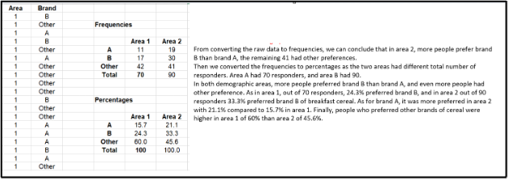

Research Methods and Professional Practice
Activity 1: Generative AI and Global Approaches
After reviewing the article by Correa et al. (2023) and scanning further papers on how different countries address the generative AI revolution, several key areas are recommended for managing the development and deployment of generative AI.
Firstly, establishing clear ethical guidelines and standards is crucial to ensure fairness, transparency, accountability, and the protection of human rights. This addresses concerns like bias in AI algorithms and the ethical implications of technologies such as deepfakes.
Secondly, creating a robust yet adaptable regulatory framework is essential to encourage innovation while safeguarding public interests, including privacy and data security. The literature review highlights how regions like the United States, Europe, and Asia approach AI regulation, underscoring the need for balanced policies that align with diverse cultural and economic contexts.
Thirdly, fostering international collaboration is vital for harmonizing standards and sharing best practices, mitigating the risks of inconsistent regulations across borders. Finally, investing in education and workforce development is imperative to equip individuals with the skills needed for AI-driven industries, promoting economic resilience and inclusivity.
These actions are justified as they collectively aim to maximize the benefits of generative AI while minimizing its potential risks. The impact of these measures spans legal certainty, social equity, and professional empowerment, ensuring a comprehensive and responsible approach to the integration of AI technologies in society.
Learning Discussion 1: ACM Case Study
I didn’t realize that we needed to investigate one case from the ACM site, so I initially chose a different case. As I haven’t received feedback from any peers yet, I’ve decided to revise my post to focus on one of the ACM cases. This choice comes after reviewing peer posts and their feedback to ensure I avoid similar mistakes.
Abusive Workplace Behavior Case:
The case of Diane and Max in the interactive technologies team reveals clear ethical breaches under the ACM Code of Ethics. Max’s abusive behavior violates Principle 1.1 by creating a harmful work environment and Principle 2.2 by failing to maintain professional communication standards. His actions, such as removing women’s names from journal submissions, conflict with Principle 1.5, denying them proper credit and showing gender bias, which also violates Principle 1.4.
Jean’s response underestimating the issue violates Principle 3.3 by neglecting the psychological well-being of team members and Principle 3.4 by failing to sustain the Code principles.
Comparing this to the BCS Code of Conduct reveals similar breaches: Sections 1(a) and (b) on integrity and harm, Section 2(d) on respecting contributions, and Section 3(c) on maintaining a respectful environment (British Computer Society, 2022). Legally, Max's actions are considered workplace harassment, leading to claims for a hostile work environment (George, 2019). Socially, such behavior damages team morale and spreads gender discrimination. Addressing these issues is crucial for maintaining professionalism and ethical standards in computing (Grosz et al., 2016).
Collaborative Learning Discussion 2: Ethical Responsibilities
From my initial post, Abi's ethical responsibility lies in presenting all analyses truthfully and transparently, regardless of their implications for Whizzz. This approach safeguards against ethical, legal, and professional pitfalls while promoting integrity in scientific inquiry.
While I did not receive direct feedback from peers, reviewing their discussions and comments widened my perspective. From these insights, I recognized several areas for improvement. Firstly, including specific examples or case studies can better illustrate the potential consequences of ethical gaps in data analysis. For example, past incidents like the misrepresentation of the drug Vioxx's safety profile by the pharmaceutical giant Merck highlight the severe consequences of unethical data handling. Vioxx significantly increased cardiovascular risk, leading Merck to withdraw the product from the market (Union of Concerned Scientists, 2017).
Secondly, providing strategies to ensure comprehensive reporting and mitigate selective reporting by the manufacturer would reinforce the argument. Strategies such as pre-registering studies and analyses with detailed protocols may improve transparency and accountability (Nosek et al., 2018). Additionally, addressing specific legal frameworks or ethical guidelines related to statistical research may offer a clearer understanding of Abi's professional responsibilities. For example, the General Data Protection Regulation (GDPR) provides a significant framework for data integrity and ethical reporting in research.
Lastly, while I acknowledged peer insights, expanding more on the specific insights gained from their discussions and how these influenced my analysis would deepen my critique.
Activity 2: Inappropriate Use of Surveys
Based on my research, two examples of the inappropriate use of surveys were found: the Hite Report on Female Sexuality (1976) and the Literary Digest Poll (1936).
Hite Report on Female Sexuality (1976): Shere Hite conducted a survey for her book in 1976, but only about 4.5% of those surveyed responded, a very low response rate. The respondents were self-selected rather than randomly chosen, and many had extreme views or experiences. This led to significant bias, as the findings were not representative of the general population. From an ethical standpoint, the survey failed to ensure diversity and inclusivity, misrepresenting the broader population's views. Professionally, the use of a non-random sample undermined the survey's credibility. The impact was critical, as the conclusions were questioned due to the sampling bias, emphasizing the importance of proper survey methodology and random sampling to obtain reliable and generalizable results. Legally, although there may not have been specific laws violated at the time, the lack of rigorous methodology could be seen as a breach of research standards and integrity.
Literary Digest Poll (1936): The Literary Digest conducted a poll to predict the outcome of the 1936 U.S. presidential election between Franklin D. Roosevelt and Alf Landon. The magazine sent out 10 million questionnaires, primarily to its own subscribers, car owners, and telephone users. This sample was not representative of the general population at the time, as it excluded many lower-income individuals who were more likely to support Roosevelt. The poll predicted a landslide victory for Landon, but Roosevelt won by a large margin. Ethically, the poll was flawed because it systematically excluded a significant portion of the population, leading to misleading results. Professionally, this failure highlighted the importance of using a representative sample in surveys to ensure accurate and valid predictions. The impact was significant, leading to the rise of more scientifically rigorous polling methods. Legally, while there were no specific legal repercussions, the poll's failure underscored the necessity for transparency and accountability in survey methodologies to maintain public trust.
Proposal Review
It is beneficial to understand research design, which involves planning how to answer a research question (Saunders et al., 2023). Therefore, I need to ensure that I have well-defined research strategies and methods for data collection and analysis.
My project focuses on risk-based authentication, specifically exploring how it can improve security over the traditional 2FA method. This research requires a mixed methods approach, combining both qualitative and quantitative data.
I designed a survey and distributed it to 10 participants, obtaining their consent beforehand. The survey included questions to capture both numerical and non-numerical data, such as:
- On a scale of 1 to 5, how secure do you feel using 2FA?
- Are you familiar with 2FA methods? (Yes/No)
- How many ways do you think risk-based authentication can improve security compared to traditional 2FA?
The quantitative approach focused on identifying patterns and relationships, enabling generalizations to be made.
Conducting this project requires technical, analytical, and interpersonal skills. These skills were outlined by PECHA (2024) as follows:
- Survey Design and Analysis: Survey design, data collection, and statistical analysis.
- Technical Skills: Cybersecurity knowledge and programming skills.
- Communication Skills: Technical writing, presentation skills, and graphic design.
Research Proposal
I designed a PowerPoint presentation titled "Risk-Based Authentication: Enhancing Security Beyond Two Factor Authentication," consisting of eleven slides. The presentation begins with a title slide, followed by a slide detailing the research problem, highlighting the limitations of current 2-Factor Authentication methods.
Next, it presents the research question, aiming to explore how risk-based authentication can provide enhanced security. The aim and objectives slide outlines the project's goals. Key literature related to the project is reviewed, offering a foundation for the research. The research design slide explains the methodology, followed by ethical considerations and risk assessments, ensuring the study's integrity. A detailed description of artifacts illustrates the practical components of the project. The timeline of proposed activities provides a clear plan for the project's progression, and the conclusion slide summarizes the key points and anticipated outcomes. This comprehensive presentation effectively communicates the project's scope, significance, and approach.
Worksheet Submission
In Units 7 and 9, we extracted statistical measures from examples and applied these concepts to exercises. In Unit 7, we focused on hypothesis testing using Excel, such as the T-test, and covered descriptive statistics, identifying measures like mean, median, mode, variance, and standard deviation. Unit 9 introduced data representation graphically by bars and histograms. For each exercise, we discussed and analyzed the results, reinforcing our understanding of these concepts and their practical applications. This process enhanced our ability to interpret and present data effectively in research and analysis.


Download Excel Files
References
- British Computer Society. (2022). BCS Code of Conduct.
- Correa, et al. (2023). Article Title. Journal Name.
- George, J. (2019). Title of Work. Publisher.
- Grosz, B., et al. (2016). Title of Work. Publisher.
- Nosek, B. A., et al. (2018). Title of Work. Publisher.
- PECHA. (2024). Title of Work. Publisher.
- Saunders, M., et al. (2023). Title of Work. Publisher.
- Union of Concerned Scientists. (2017). Title of Work. Publisher.